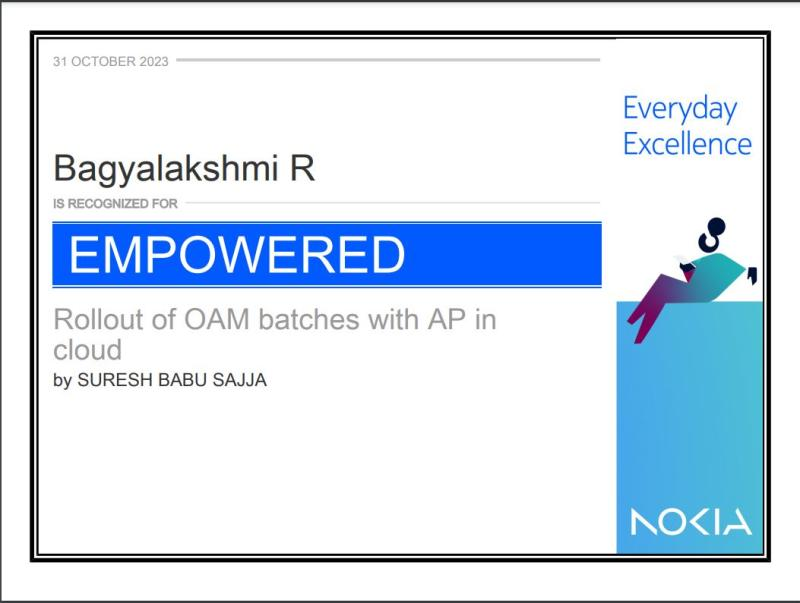

Team Level recognition
- Acknowledged by management for successfully integrating Altiplano with OAM batches in the cloud.
- Conducted in-depth analysis of OAM batch failures using clicktest-on-cloud runs, identifying and raising 15 critical bugs (7 in LS SW, 3 in AP SW, and 5 in LS Test).
- Praised for exceptional coordination across teams, driving conclusions, and successfully closing the activity
- Manager's words, "Bagya, brought solutions and successfully integrated Altiplano with OAM batches in cloud , Very good work was done in analyzing the OAM batch failures with Altiplano with clicktest-on-cloud runs. During this activity, we raised 15 bugs (7 LS SW, 3AP SW and 5 LS Test). I greatly appreciate the way you coordinated different teams and draw the conclusions and closed the activity"